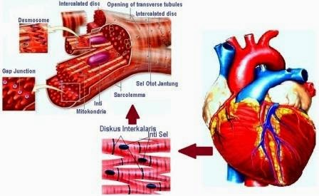

13 Gejala Penyakit Jantung yang Kerap Tidak Disadari Pengidapnya Halaman all - Kompas.com
2021.06.08 01:06
Harian Kompas Kompas TV Live Radio Kompasiana.com Pasangiklan.com Gramedia.com Gramedia Digital GridOto.com Bolasport.com Grid.id Kontan.co.id Kgmedia.id Langganan Kompas.id MASUK News Nasional Megapolitan Global Surat Pembaca Kilas Daerah Kilas Korporasi Kilas Kementerian Sorot Politik Kilas Badan Negara Kilas Parlemen Indeks Regional Medan Palembang Surabaya Makassar Balikpapan Samarinda Tren Health Food Resep Tips Kuliner Food News Food Story Galeri Edukasi Sekolah Perguruan Tinggi Pendidikan Khusus Beasiswa Skola Dunia Kuliah Kilas Pendidikan Parapuan Trending Topic Love & Life Wellness Fashion & Beauty Lady Boss Money Whats New Earn Smart Work Smart Spend Smart Smartpreneur Kilas BUMN Kilas Badan Kilas Transportasi Kilas Fintech Indeks Tekno APPS & OS Gadget Internet Hardware Business Galeri Indeks Lifestyle Eat Good Look Good Feel Good Sadar Stunting Homey Housing Decor Home Appliances Pets & Garden DIY Properti News Hunian Arsitektur Beranda Konsultasi Figur Tips Galeri 360 Indeks Sorot Properti Bola Liga Indonesia Liga Italia Liga Champions Liga Lain Liga Inggris Liga Spanyol Internasional Bundesliga Motogp Badminton Sports Indeks Travel Jalan Jalan Itinerary Travel Tips Travel Promo Travel Update Galeri Superapp Parekraf Ohayo Jepang Indeks Otomotif Motor Mobil Sport Niaga Komunitas Otopedia Sains Fenomena Kita Oh Begitu Halo Prof Prof Cilik Indeks Hype Seleb Musik Film Hits Ent! Indeks VIK Kolom JEO Images Foto Video Bagikan:
13 Gejala Penyakit Jantung yang Kerap Tidak Disadari Pengidapnya
Komentar: HEALTHTOPIK UNTUKMU:
#gatal di selangkangan #Penyakit ginjal #asam lambung #Gatal di selangkangan #vagina kering #Menstruasi #Asam lambung #penyakit jantung #penyakit menular seksual #menghilangkan kutu rambutHome Health
Tumbuh bersama kekuatan mimpi perempuan Indonesia13 Gejala Penyakit Jantung yang Kerap Tidak Disadari Pengidapnya
Kompas.com - 20/03/2021, 10:01 WIB Bagikan: Komentar SHUTTERSTOCK Ilustrasi penyakit jantung. Penulis Mahardini Nur Afifah | Editor Mahardini Nur AfifahKOMPAS.com - Banyak orang tidak menyadari dirinya tengah mengalami gejala penyakit jantung .
Pasalnya, tanda penyakit jantung terkadang mirip dengan masuk angin, gangguan pencernaan, atau masalah pernapasan.
Berikut beberapa gejala penyakit jantung yang kerap tidak disadari para pengidapnya:
Baca juga: Hati-hati, Ini 11 Tanda Penyakit Jantung yang Kerap Diabaikan
1. Rasa tidak nyaman di dada
Melansir WebMD , tidak semua penderita penyakit jantung mengalami sakit dada hebat sampai pingsan.
Selain nyeri, rasa tidak nyaman di dada yang jadi ciri-ciri penyakit jantung juga bisa berupa rasa sesak, dada rasanya seperti ditekan, dicubit, terhimpit, atau terasa panas.
Rasa tidak nyaman di dada terkait penyakit jantung umumnya berlangsung lama dan muncul selama beberapa menit
Terima kasih telah membaca Kompas.com.
Dapatkan informasi, inspirasi dan insight di email kamu.
Daftarkan email
Gejala penyakit jantung ini bisa muncul secara tiba-tiba, baik saat sedang istirahat atau sedang beraktivitas.
Jika rasa tidak nyaman di dada hanya berlangsung singkat dan sembuh setelah sumbernya ditekan, bisa jadi hal itu tidak terkait penyakit jantung.
Perlu diingat, wanita biasanya tidak mengalami sakit dada saat terkena penyakit jantung.
Baca juga: 5 Cara Mencegah Penyakit Jantung
2. Nyeri sampai ke lengan
Selain rasa tidak nyaman di dada, gejala penyakit jantung lainnya adalah rasa nyeri yang menjalar ke lengan sampai sebagian tubuh sebelah kiri.
Rasa nyeri dan tidak nyaman dari dada ini umumnya paling kentara menjalar ke lengan.
3. Sakit menjalar ke bagian rahang atau punggung
Sakit di bagian tenggorokan atau rahang biasanya terkait nyeri otot, gangguan sinus, atau flu.
Tapi, rasa tidak nyaman di bagian dada yang menjalar ke tenggorokan, rahang, sampai ke punggung bisa jadi gejala serangan jantung.
Kondisi ini termasuk darurat kesehatan. Segera bawa penderita ke rumah sakit untuk memastikan semuanya baik-baik saja.
4. Detak jantung kerap tidak teratur atau cepat
Shutterstock.com Ilustrasi serangan jantung di usia muda Dilansir dari British Heart Foundation , detak jantung yang tidak teratur atau terlalu cepat juga bisa jadi tanda penyakit jantung.
Selama ini banyak orang tidak memperhatikan detak jantungnya dan hanya mengukur tekanan darahnya.
Jika jantung kerap berdebar kencang atau tidak beraturan, saatnya waspada dan lakukan pemeriksaan ke dokter.
Baca juga: Ciri-Ciri Penyakit Jantung Sesuai Jenisnya
5. Sakit perut atau gangguan pencernaan
Banyak penderita penyakit jantung yang merasakan tanda mirip gangguan pencernaan seperti rasa panas dan sakit di dada atau perut bagian atas ( heartburn ).
Hal itu disebabkan letak jantung, tenggorokan, dan perut posisinya saling berdekatan.
Jika ada gangguan pencernaan disertai gejala penyakit jantung lainnya, segera periksakan diri ke dokter.
6. Pusing dan pening
Kepala pusing dan pening biasanya muncul karena badan kehilangan keseimbangan atau lemas.
Penyebab pusing dan pening lainnya juga bisa berasal dari kurang asupan makanan atau minuman tertentu.
Selain itu, kepala juga bisa pusing dan pening ketika seseorang tiba-tiba berdiri atau beranjak dari posisi tidur dan berdiri.
Tapi, Anda perlu waspada apabila kepala tiba-tiba pusing dan pening disertai rasa tidak nyaman di dada dan gejala penyakit jantung lainnya.
Hal itu bisa berarti tekanan darah turun karena jantung tidak dapat memompa darah dengan normal.
Baca juga: Ciri-ciri Penyakit Jantung Lemah dan Penyebabnya
7. Gampang lelah
Gangguan jantung dapat membuat penderitanya mudah lelah atau kehabisan napas, padahal tidak melakukan sesuatu yang berat.
Misalkan naik anak tangga, membawa barang dari dalam rumah ke kendaraan, atau jalan kaki agak jauh.
Perubahan fisik gampang lelah ini biasanya tanpa sebab jelas dan terasa ekstrem selama beberapa hari. Gejala penyakit jantung mudah lelah ini biasanya dialami wanita.
8. Mendengkur
Mendengkur adalah sesuatu yang wajar saat tidur. Tapi, waspadai dengkuran yang sangat keras dan sesekali terengah-engah atau tersedak.
Hal itu bisa jadi tanda tubuh berhenti bernapas sejenak saat tidur. Kondisi ini bisa memberikan tekanan ekstra pada jantung.
9. Kerap berkeringat dingin
Keluarnya keringat dingin tanpa sebab jelas juga bisa jadi gejala penyakit jantung.
Hati-hati saat keringat dingin kerap keluar disertai gejala lain di atas. Jangan tunda lagi untuk berkonsultasi ke dokter.
Baca juga: Mengapa Kolesterol Tinggi dapat Menyebabkan Penyakit Jantung?
10. Batuk
Shutterstock Ilustrasi serangan jantung, jantung berdebar Ciri-ciri batuk pada penyakit jantung biasanya berlangsung dalam waktu yang lama.
Selain itu, batuk pada penyakit jantung juga disertai keluarnya lendir berwarna putih atau merah muda.
Kondisi ini disebabkan jantung tidak dapat memompa darah ke seluruh tubuh dan darah merembes kembali ke paru-paru.
11. Kaki bengkak
Ketika jantung tidak dapat memompa darah dengan kecepatan yang biasanya, darah bisa kembali ke pembuluh darah.
Hal itu membuat ginjal sulit mengeluarkan air dan natrium berlebih dari tubuh.
Dampaknya, beberapa bagian tubuh terutama bagian bawah seperti kaki jadi bengkak.
12. Tersedak
Terkadang, rasa sesak napas dan sakit dada yang dirasakan penderita penyakit jantung sampai membuat tersedak.
Rasa tersedak ini muncul dari tekanan di dekat tenggorokan. Jika Anda merasakan tersedak dan gejala penyakit jantung lain, segera hubungi dokter.
Baca juga: Kenali Jantung Berdebar Gejala Penyakit Jantung Takikardia
13. Tidak enak badan
Tanda penyakit jantung lainnya yang kerap tidak disadari adalah rasa tidak enak badan.
Rasa tidak badan ini mulanya muncul dari nyeri dada atau mual seperti saat masuk angin.
Bedanya, tidak enak badan pada penyakit jantung kerap muncul tiba-tiba dan tanpa penyebab jelas.
Artikel ini merupakan bagian dari Parapuan.
Parapuan adalah ruang aktualisasi diri perempuan untuk mencapai mimpinya.
Kompas.com Play
Lihat SemuaIkut Survey! Dapatkan Voucher Go-pay
Dapatkan Ipad Air 3, Samsung M31, dan E-voucher
Bantu kami jadi lebih baik lagi!
Teka-Teki Santuy Seputar Kode Plat Di Indonesia
TTS - Teka Teki Santuy Edisi Istilah Kata
Teka Teki Santuy Seputar Singkatan Umum
Sumber WebMD , British Heart Foundation
Tag: penyakit jantung gejala penyakit jantung tanda penyakit jantung ciri ciri penyakit jantung
Berita Terkait
Hati-hati, Ini 11 Tanda Penyakit Jantung yang Kerap Diabaikan
Apakah Penyakit Jantung Bisa Sembuh?
6 Jenis Penyakit Jantung dan Ciri-cirinya
7 Perbedaan Gejala Penyakit Jantung pada Wanita dan Pria
3 Ciri-ciri Penyakit Jantung pada Wanita, Selain Nyeri Dada
Berita Terkait
Hati-hati, Ini 11 Tanda Penyakit Jantung yang Kerap Diabaikan
Apakah Penyakit Jantung Bisa Sembuh?
6 Jenis Penyakit Jantung dan Ciri-cirinya
7 Perbedaan Gejala Penyakit Jantung pada Wanita dan Pria
3 Ciri-ciri Penyakit Jantung pada Wanita, Selain Nyeri Dada
Rekomendasi untuk anda Powered by Jixie mencari berita yang dekat dengan preferensi dan pilihan Anda. Kumpulan berita tersebut disajikan sebagai berita pilihan yang lebih sesuai dengan minat Anda. INFO-PRODUK Fakta Viagra, Obat Kuat yang Disebut HEALTH 7 Gejala Kekurangan Selenium yang Perlu HEALTH Apa Penyebab Penyakit Autoimun? HEALTH 7 Penyebab Vagina Gatal sebelum Menstruasi HEALTH Beda Penyebab Penyakit Ginjal Akut dan HEALTH 5 Gejala Penyakit Autoimun yang Umum HEALTH 15 Gejala Penyakit Ginjal yang Perlu UMUM Rekomendasi Makanan Enak untuk Kesehatan Jantung, KomentarTulis komentar dengan menyertakan tagar #JernihBerkomentar dan #MelihatHarapan di kolom komentar artikel Kompas.com. Menangkan E-Voucher senilai Jutaan Rupiah dan 1 unit Smartphone .
Syarat & Ketentuan Kolom komentar masih kosong Berkomentarlah secara bijaksana dan bertanggung jawab. Komentar sepenuhnya menjadi tanggung jawab komentator seperti diatur dalam UU ITE Kirim Mengirim Terima kasih. Kami sudah menerima laporan Anda. Kami akan menghapus komentar yang bertentangan dengan Panduan Komunitas dan UU ITE. OKTerkini Lainnya
10 Cara Mengatasi Ambeien Secara Alami dan dengan Bantuan Obat
Health 08/06/2021, 06:00 WIBGejala Kencing Nanah pada Pria dan Wanita yang Perlu Diwaspadai
Health 07/06/2021, 22:22 WIBMemahami Apa Itu Keputihan dan Cara Merawat Vagina
Health 07/06/2021, 21:01 WIBGejala Kemandulan pada Pria dan Wanita
Health 07/06/2021, 19:35 WIBAwas, Dehidrasi Bisa Sebabkan Gangguan Kecemasan
Health 07/06/2021, 18:00 WIBTakut Saat Mendengar Suara Ambulans? Hati-hati Fonofobia
Health 07/06/2021, 16:38 WIB12 Cara Mengeluarkan Air dari Telinga
Health 07/06/2021, 15:03 WIBBisa Picu Sakit Kepala, Bagaimana Cara Terbaik Hentikan Asupan Kafein?
Health 07/06/2021, 13:31 WIB5 Penyakit yang Ditandai dengan Trombosit Rendah, Bukan Hanya DBD
Health 07/06/2021, 12:02 WIB5 Makanan dan Minuman yang Dapat Menurunkan Daya Ingat
Health 07/06/2021, 10:32 WIB3 Ciri-ciri Kanker Kulit sesuai Jenis yang Paling Umum
Health 07/06/2021, 09:01 WIB6 Penyebab Rambut Kering, Tak Hanya Karena Perawatan Asal-asalan
Health 07/06/2021, 07:31 WIB5 Cara Mudah Menghilangkan Kutu Rambut
Health 07/06/2021, 06:00 WIB14 Penyebab Penis Keluar Darah yang Perlu Diwaspadai
Health 06/06/2021, 22:29 WIBIni Makanan yang Sebaiknya Dikonsumsi saat Menstruasi
Health 06/06/2021, 21:00 WIB 1 2 3 NextTerpopuler
1Gatal di Selangkangan: Gejala, Penyebab, dan Penanganannya
Dibaca 492.024 kali 25 Tanda Awal Penyakit Ginjal yang Harus Diwaspadai
Dibaca 135.881 kali 35 Cara Mudah Menghilangkan Kutu Rambut
Dibaca 18.673 kali 4Sama-sama Olahan Kedelai, Mana yang Lebih Sehat Tempe atau Tahu?
Dibaca 14.602 kali 5Sudah Mendapatkan Vaksin Covid-19, Amankah Melakukan Jabat Tangan?
Dibaca 9.537 kaliBisa Mati, Jangan Mandikan Anak Kucing yang Baru Berusia 2 Bulan Begini Cara Tepat Membersihkannya
Bakal Jadi Pasangan yang Bucin, 4 Zodiak ini Cocok Menjalin Hubungan Dengan Sagitarius
Kunjungi kanal-kanal Sonora.id
Motivasi
Fengshui
Tips Bisnis
Kesehatan
Now Trending
8 Daerah di Jateng Disebut Ganjar Masuk Zona Merah, Mana Saja?
Banjir Keluhan PPDB Jakarta, Disdik Pertimbangkan Pembagian Waktu Pendaftaran Berdasarkan Jenjang
Gandeng FBI, Polisi Buru Otak Pelaku Scammer yang Curi Rp 875 Milliar dari Bansos Covid-19 Amerika
Klasemen Kualifikasi Piala Dunia 2022 Zona Asia Usai Indonesia Kalah dari Vietnam
Waspada, 8 Daerah di Jateng Sudah Berstatus Zona Merah Covid-19
Link Live Streaming Timnas Indonesia Vs Vietnam, Kickoff 23.45 WIB
Belasan Pemotor Ducati Kena Tilang di Senayan, Ini Penjelasan Polisi
Hasil Timnas Indonesia Vs Vietnam, Garuda Babak Belur Dihajar 4 Gol
komentar di artikel lainnya Demi Kesehatan Fisik dan Mental, Berikut 5 Cara Redakan Stres https://health.kompas.com/read/2021/03/20/081500368/demi-kesehatan-fisik-dan-mental-berikut-5-cara-redakan-stres https://asset.kompas.com/crops/pOO4-dd4jJu4LBBY03Yerpf-Rjw=/0x1:1000x668/195x98/data/photo/2020/02/19/5e4d3a375bbc7.jpgMungkin Anda melewatkan ini
Demi Kesehatan Fisik dan Mental, Berikut 5 Cara Redakan Stres
Terasa Melegakan, Adakah Bahaya Meretakkan Jari?
5 Cara Mengobati Sariawan di Lidah
10 Cara Agar Tidur Bisa Teratur
10 Minuman yang Mengandung Kafein, Tak Hanya Kopi
Close Ads X Jelajahi Kompas.com Bola Tekno Otomotif Internasional News Nasional Megapolitan Tren Health Entertainment Money Sains Regional Properti Lifestyle Travel Edukasi Food Homey Parapuan Images VIK Ohayo Jepang Kolom JEO Kompas Video Skola Artikel Terpopuler Artikel Terkini Topik Pilihan Artikel Headline Penghargaan dan sertifikat: Kabar Palmerah About Us Advertise Policy Pedoman Media Siber Career Contact Us Copyright 2008 - 2021 PT. Kompas Cyber Media ( Kompas Gramedia Digital Group ). All rights reserved.- Penyakit Penyakit Jantung - Gejala, Penyebab, Pengobatan .
- Jantung - Gejala, Penyakit, dan Cara Mengobati | Halodoc.com
- Jangan Abaikan Gejala-Gejala Jantung Bengkak Berikut Ini .
- 11 Gejala Penyakit Jantung yang Bisa Terlihat di Kulit dan .
- Jantung - Wikipedia bahasa Indonesia, ensiklopedia bebas
- Penyakit Jantung - Pengertian, Gejala, Penyebab, Faktor .
- Mengatasi Sakit Jantung dan Serangan Jantung – Pemerintah .
- Waspada dan Kenali Lebih Jauh Ciri-Ciri Sakit Jantung .
- Patut waspada, inilah 4 ciri-ciri penyakit jantung - Kesehatan
- Tempat-Tempat Nyeri Pada Gangguan Jantung - Direktorat .
- Penyakit Penyakit Jantung - Gejala, Penyebab, Pengobatan .
adalah organ terpenting dalam tubuh manusia dan mempunyai ukuran sebesar kapalan tangan. berfungsi memompa dan menyebarkan darah . - Jantung - Gejala, Penyakit, dan Cara Mengobati | Halodoc.com
Di Indonesia sendiri, penyakit kardiovaskuler, stroke dan penyakit koroner adalah penyebab utama kematian yang menyebabkan lebih dari 470.000 . - Jangan Abaikan Gejala-Gejala Jantung Bengkak Berikut Ini .
(bahasa Latin: cor) adalah sebuah rongga, rongga organ berotot yang memompa darah lewat pembuluh darah oleh kontraksi berirama yang berulang. - 11 Gejala Penyakit Jantung yang Bisa Terlihat di Kulit dan .
7 hari yang lalu — - Jantung - Wikipedia bahasa Indonesia, ensiklopedia bebas
Tingginya angka kematian akibat penyakit , khususnya serangan , selayaknya menjadi perhatian masyarakat dan petugas kesehatan sehingga . - Penyakit Jantung - Pengertian, Gejala, Penyebab, Faktor .
Gejala paling umum dari penyakit coroner adalah angina atau angina pectoris yang juga dikenal sebagai nyeri dada. Angina dapat digambarkan . - Mengatasi Sakit Jantung dan Serangan Jantung – Pemerintah .
Gagal , merupakan suatu kegagalan otot untuk memompakan darah secara memadai ke seluruh tubuh. Aritmia, merupakan suatu gangguan . - Waspada dan Kenali Lebih Jauh Ciri-Ciri Sakit Jantung .
3 hari yang lalu — - Patut waspada, inilah 4 ciri-ciri penyakit jantung - Kesehatan
16 Okt 2020 — - Tempat-Tempat Nyeri Pada Gangguan Jantung - Direktorat .
7 Mei 2021 —
adalah organ terpenting dalam tubuh manusia dan mempunyai ukuran sebesar kapalan tangan. berfungsi memompa dan menyebarkan darah .
Di Indonesia sendiri, penyakit kardiovaskuler, stroke dan penyakit koroner adalah penyebab utama kematian yang menyebabkan lebih dari 470.000 .
(bahasa Latin: cor) adalah sebuah rongga, rongga organ berotot yang memompa darah lewat pembuluh darah oleh kontraksi berirama yang berulang.
7 hari yang lalu —
Tingginya angka kematian akibat penyakit , khususnya serangan , selayaknya menjadi perhatian masyarakat dan petugas kesehatan sehingga .
Gejala paling umum dari penyakit coroner adalah angina atau angina pectoris yang juga dikenal sebagai nyeri dada. Angina dapat digambarkan .
Gagal , merupakan suatu kegagalan otot untuk memompakan darah secara memadai ke seluruh tubuh. Aritmia, merupakan suatu gangguan .
3 hari yang lalu —
16 Okt 2020 —
7 Mei 2021 —
